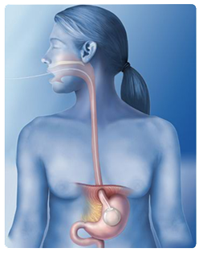

How does the Intragastric Stomach Balloon work?
|
The Jump6™ program begins with the Intragastric Balloon consists of a soft, expandable intragastric (inside the stomach) balloon that is temporarily inserted into the stomach to create a feeling of early and prolonged fullness after meals – a foundation for weight loss. The device itself is a soft silicone intragastric balloon that is inserted (without surgery) in a deflated state into the stomach and then inflated with sterile water through a self-sealing valve once it enters the stomach. The intragastric balloon will remain in place for a maximum of 6-months. |
 |
|
The intragastric (inside stomach) balloon provides a 6 month jump-start to healthy weight loss and is an ideal solution if you are looking to lose 20-60lbs but are fearful of surgery, fed up with diets, pills and other weight loss programs that didn’t work. The amount any patient will lose depends entirely on how well they adapt to Jump6™ Weight Loss Program, featuring the Intragastric Balloon, alter their eating behaviour, and adopt an exercise regimen. A good aim is to try and average a loss of 2lbs per week, and studies have shown that with the Intragastric Balloon, patients can lose and keep off 20-60lbs in six months. Thousands of patients have seen results with the assistance from the Jump6 weight loss program. If you've struggled in the past and desire to look and feel better then call today and get started with a complimentary consultation. It's time to jump start your weight loss and jump start you life. The Jump6™ program featuring the Intragastric Balloon has already become a clinically accepted treatment for weight loss in Europe and South America and is now available in Canada and Australia. Jump6 clinics currently available throughout Ontario and will soon open in other provinces of Canada. During those 6 months (and beyond) you will work together with the Jump6™ program experts on a customized plan with your support team of weight loss experts, to overcome the challenges of retraining your appetite, adopting new nutritional habits, and establishing a reasonable exercise routine to help you succeed and stay motivated. |
Call today and jump start your weight loss 1-866-375-2452

Phone consultations are available as the jump6 weight loss program has helped thousands of men and women from around the globe achieve non surgical weight loss success .
The Jump6™ program featuring the Intragastric Balloon has already become a clinically accepted treatment for weight loss in Europe and South America and is being introduced to Canada and Australia. Jump6 clinics are currently available throughout Ontario and will soon open in other provinces of Canada.
Placement Procedure
The gastric balloon is inserted through the mouth into the stomach by what is called and endoscopic procedure. The supervising physician will initially look at the stomach through an endoscopic camera. If no abnormalities are seen he will then proceed with the placement of the balloon, which is inserted while in its compact, deflated form. The swallowing process involved is made easier with the help of light sedation. Once inside the stomach the gastric balloon is immediately filled with sterile water through a small filling tube (catheter) attached to the gastric balloon. The gastric balloon has a self-sealing valve and once it is filled, the catheter is gently removed. When the gastric balloon is full it is too large to pass into the bowel. Placement procedure times vary but it usually takes between 20-30 mins.
All results vary patient to patient.